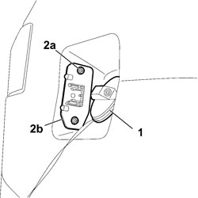
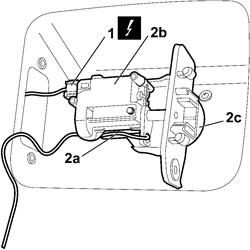

7025C40 FUEL FILLER FLAP CONTROL MOTOR - R+R AND CHECK LOCK SUPPLY LINE
- Path
- Procedures > 70 FITTINGS > 7025 COMPARTMENT COVERS > 7025C VARIOUS FLAPS (EXTERIOR) > 7025C40 FUEL FILLER FLAP CONTROL MOTOR - R+R AND CHECK LOCK SUPPLY LINE
- Kind
- repair procedure (removal / refitting; the operation number is the code)
- Applies to
- all engines; all production periods
- Interactive page
- https://sloeber94.github.io/elrnDB-fCrm/en/#/194000969
Applies to: all engines; all production periods
 Removing
Removing
 Refitting
Refitting- Turn the ignition key to the OFF position.
- Disconnect the negative battery terminal.
Description | Connector | |
|---|---|---|
BATTERY |
Open the fuel flap.
1. Loosen the fuel cap.
2. Unscrew bolts (2a) and remove the striker of flap (2b) with the motor.
Re-tighten the fuel cap.

Applies to: all engines; all production periods
1. Disconnect the electrical connection for the motor.
Description | Connector | |
|---|---|---|
1 | FUEL FLAP LOCK GEARED MOTOR |
2. Release the emergency cord (2a) from the motor retainer, unscrew the bolts and remove motor (2b) from striker (2c).

Applies to: all engines; all production periods
Refitting
Removing- Check that the motor-striker unit is not damaged.
- Connect the emergency cord to the retainer.
- Position the motor and secure it using the bolts.
- Connect the electrical connection for the motor.
Description | Connector | |
|---|---|---|
FUEL FLAP LOCK GEARED MOTOR |
- Loosen the fuel cap.
- Place the motor-striker unit in position and tighten the fixing bolts.
- Recover the emergency cord with the probe.
- Re-tighten the fuel cap and close the flap.
- Check that the fuel flap is working properly.
- Connect the negative battery terminal.
Description | Connector | |
|---|---|---|
BATTERY |